登場角色
- 第一部
-主角
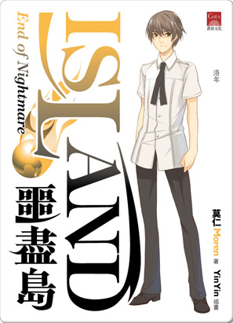
沈洛年
裝備：金犀匕、血飲袍及牛精旗（姜普旗）；雲南蜣螂(糞金龜)影蠱（名凱布利）
狀況：鳳凰換靈，修練闇靈
能力：提升自己心念速度(變相降低對週遭的時間流感，會感覺整個環境包括自己的動作都慢下來)、同時，因身懷生命之源、能窺破虛妄，媚惑之術、障眼之法、天成之氣等能力無效，也能體察他人內心的情緒（但只在面對本體時有效）、能以道息化散炁息、增加或降低自身質量（動量不守恆，亦即輕重轉換間，不會影響移動速度）
西地高中二年級生，初登場時16歲。生日在七月七日[8]。父母於四年前雙亡，與叔叔沈商山同住，但叔叔因導演工作經常不在家。
無意中得到懷真所想要『鳳凰換靈』資格，而身負渾沌原息(一般人類稱為道息)。差點被憤怒的懷真吞掉。其後與懷真達成共識，定下血冰戒咒誓。
後來發現咒誓中的「直到永遠」變為懷真的責任，若無法維持咒誓直到永遠，懷真可能受血冰戒反噬而死，懷真欲與沈洛年解咒卻失敗，因此決定偷寶物贈與洛年蓋咒，但寶物價值無法超越「吸取渾沌原息、直到永遠」的咒誓而蓋咒失敗，尾聲洛年為了拯救殘存人類所以犧牲自己，與閉幽採捕之力餘萬載的天狐懷真交合，身上渾沌原息與生命力盡數遭懷真吸取，闇靈判斷他失去生機而將闇靈之力取回(虯龍族龍王母承諾若屍靈王自裁，則保護人類五十年)，沈洛年身上已無渾沌原息，利用龐大精智力強撐意志，成功與懷真解咒。
不愛與人深交，但看見別人有危難時常會不由自主衝動。
因有闇靈之力與后土訂約擁有「多功能型輕疾」，條件是不能製作殭屍。輕疾使用的名諱「沈洛年」，後來改成「闇鳳沈洛年」。
第十二集中曾因盜龍族寶庫而遇到納金族人並被關入寶庫之中，並利用納金族個性與鳳靈能力騙得全族皆為他奴隸，作為教訓。
故事最後因人類遭犬戎、鑿齒、刑天圍攻，沈洛年接受輕疾的建議讓葉瑋珊、奇雅、白玄藍一起打開玄界之門將過去儲存的炁息以最大量輸出，開啟金犀匕來殺退敵人。後金犀匕被原物主虯龍王母收回，牛精旗後於離去尋找懷真時贈與奇雅。
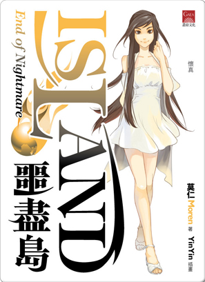
懷真
狀況：天仙。修練雷靈。
狐仙，身上有喜慾之氣，會吸引別人喜愛。
個性精靈而調皮，三千年前受到白澤告知將遭遇破戒之厄，所以凝止身軀滯留人間，化為蛙仙石等待鳳凰。
最初打算吞掉洛年洩憤，但後來放棄。然後與洛年定下血冰戒咒誓，後來才發覺誓約是平等的（洛年死亡懷真也要死）。
於每月的農曆十五日前後會來探望洛年，偶而會給洛年建議。
在白宗等人前自稱是洛年的「姐姐」、「塗山胡宗宗長」。
在噩盡島「參觀」時被困島上，雖得洛年尋回，但因救助白宗等人而失蹤。
失蹤的原因是因為與刑天打鬥時被推入孔道，回到仙界。後來洛年以咒誓之法尋找懷真時被占據孔道的刑天攻擊至垂死（從腰部斷開），只好把與本命相連的炁息散去大半才能回到凡間，導致元氣大傷，十成道行剩不到一成。
在與洛年回台灣尋人時認識燄丹、山芷、羽霽三小妖獸，並為她們起道號以及照顧她們，一同探索龍庫，尋找寶物蓋咒。
其後於高原地區定居，幫助三小化人，不久後三小的母親到達凡間，帶著三小離開。
在得知洛年開始將懷真當成異性看待時很高興，但說著兩人在一起的話兩人會死，就離開洛年。輕疾使用的名諱『仙狐懷真』。
離開洛年後到達台灣，與山芷、羽霽及其母一起砍樹協助做船，並幫忙白宗等人。在白宗等人到世界各地救人前教會使用輕疾，以及一些精體武器給眾人後。然後開始閉關（原因是喜欲之氣開始大漲）。
認識龍王母，是其後輩。
西地高中
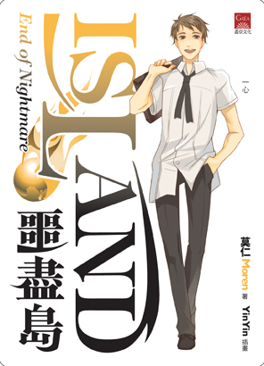
賴一心
裝備：銀色長槍→黑木長矛（精體武器）、洛年之鏡
狀況：內聚型，專修柔訣。
西地高中三年級生，初登場時17歲。家有一母，任職小學老師，於四二九大劫後生還。
個性爽朗熱情、待人和善，但過於樂觀，帶點孩子氣。帶娃娃臉的陽光少年。
登場時已是白宗門人，在學校遇上巨蟒妖怪時認識洛年等人。並建議領洛年等人入門。
本為運動的天才，後改為鑽研武藝。白宗等人的武術、修煉方法都是由他鑽研。
似乎擁有極微量的尊伏之氣，於13卷證實為虯龍血脈。

葉瑋珊
裝備：杖型匕首、洛年之鏡、銀白色的戒指（可使炁優化)
狀況：發散型，專修爆訣。修練炎靈。
西地高中三年級生，初登場時17歲。
容貌端麗、氣質不俗，但經常板著臉，是校內的資優生。個性認真負責任，但容易自責。
登場時已是白宗門人，在學校遇上巨蟒妖怪時認識洛年。最初並不喜歡洛年，因當時洛年常用目光在看她身材。在洛年第二次遇上妖怪時說出「要是遇到第三次，可得把你抓回去研究」，結果當真
再度遇上妖怪。其後再度邀請洛年加入白宗。
第四卷時成為新一任宗長。喜歡賴一心，但同時也對沈洛年有一絲情愫，只是比不上對一心的感情。懂得引仙之法。
雙親在道息爆發時失蹤。
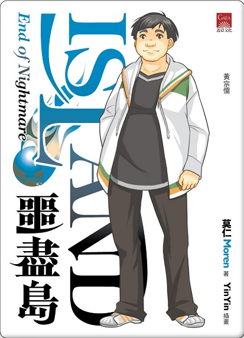
黃宗儒 裝備：寬刀和長方形的盾牌→帶刺雙盾→弓箭和短雙棍（精體武器）、洛年之鏡 狀況：內聚型，專修凝訣。引仙煉鱗。 西地高中三年級生（漫畫版中改為高中二年生）。
家中經營網咖，除了父母外還有一個弟弟。 綽號「無敵大」，身材肥矮，性格深穩。與志文、添良是一起玩線上遊戲的夥伴，網名是至尊無敵，是一公會的會長。 在學校遇上妖怪時被一心救助。其後加入白宗。 家人在道息爆發（通稱四二九大刧）時失蹤。
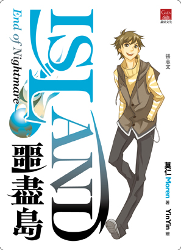
張志文
裝備：雙手劍→細長劍→銀煉軟劍（精體武器）、洛年之鏡
狀況：內聚型，專修輕訣，引仙千羽
西地高中三年級生（漫畫版中改為高中二年生）。家有父母，一個哥哥的四人家庭。
綽號「蚊子」，身材瘦黃，有點小聰明。與宗儒、添良是一起玩線上遊戲的夥伴。
在學校遇上妖怪時被一心救助。其後加入白宗，因為喜歡的漫畫女角使用雙手巨劍，所以選雙手巨劍作武器。
家人在道息爆發時死亡。
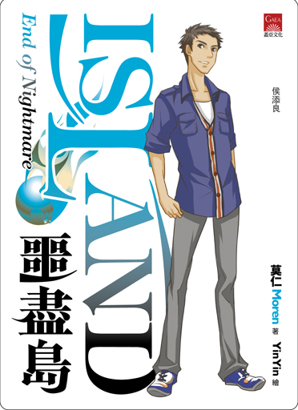
侯添良
裝備：武士刀→細長劍→窄刺劍（精體武器）、洛年之鏡
狀況：內聚型，專修輕訣，引仙揚馳
西地高中三年級生（漫畫版中改為高中二年生）。家中獨子，父親是警察。
綽號「阿猴」，膚色黝黑，性格耿直。與宗儒、志文是一起玩線上遊戲的夥伴。
在學校遇上妖怪時被一心救助。其後加入白宗，因為喜歡的動畫女角使用武士刀，所以選武士刀作武器。
五卷時表示喜歡奇雅。生日在年底。
雙親在道息爆發時死亡。
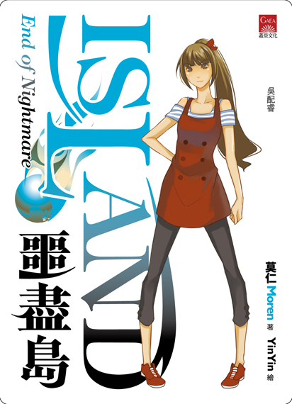
吳配睿
裝備：偃月刀→雙手長刀（精體武器）、洛年之鏡
狀況：內聚型，專修爆訣，引仙獵行
西地高中一年級生，初登場時14歲。家有父母的三人家庭，但關係惡劣，因曾被繼父性侵未遂，(母親卻偏袒繼父，因此對家人和愛情感到絕望)
通稱《小睿》，綁著長馬尾，帶著小麥色肌膚高眺女生。
校內田徑隊成員，項目是馬拉松。本打算加入白宗，但不符合資格（年齡過輕），後因洛年介紹才成功加入。
生日是五月五日。
白宗
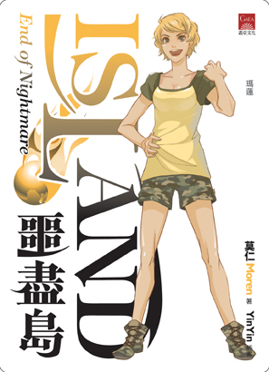
瑪蓮
裝備：青色厚背刀→古銅色彎刀（精體武器）、洛年之鏡
狀況：內聚型，專修爆訣，引仙煉鱗
初登場時20歲。性格粗疏率真，活潑好動。第一人稱是「阿姊」。
在洛年板橋車站第三次遇妖時出現殺妖。其後於西餐廳正式認識洛年。
與奇雅是同一間孤兒院出身，名稱都是自已改。生日是三月九日。
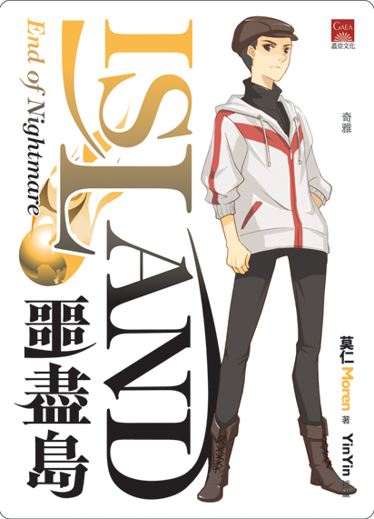
奇雅
裝備：銀色細窄小匕首、洛年之鏡、鵝黃色絨墜項鏈（可使炁有輕訣的效果）
狀況：發散型，專修柔訣。修練凍靈。
初登場時20歲。容貌娟秀，娃娃臉的短發女子，給人感覺冷冰冰。性格與洛年其實有點相似，故比較投緣。
在洛年板橋車站第三次遇妖時出現殺妖。其後於西餐廳正式認識洛年。
與瑪蓮是同一間孤兒院出身。十月生日。
網友推測對瑪蓮抱持著類似愛情的喜歡。
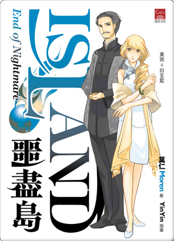
白玄藍
裝備：匕首、洛年之鏡
狀況：發散型，專修爆訣。修練炎靈（因炎術與爆訣配合較好）。
白宗第二代宗長，第四卷時退任。外表二十多歲，實際已有四十左右。
個性柔和。翻譯道咒總綱。懂得引仙之法。
黃齊
裝備：五節劍、洛年之鏡（第12卷時曾借給劉巧雯，其後借給小純，13卷時還給黃齊）
狀況：內聚型，輕柔雙修。
四十歲左右的壯年人，臉上留著的八字鬍。
白玄藍的丈夫，瑋珊的舅舅。翻譯道咒總綱。
疼愛老婆、擅長古語。
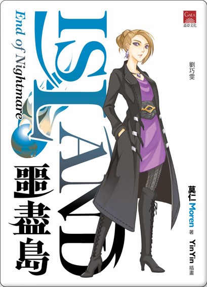
劉巧雯
裝備：匕首
狀況：發散型，爆輕雙修。
與白玄藍同輩。外表二十餘歲。心思複雜，總是話中有話，
最後因撿到沈洛年遺留在湖底的暗靈法器，成為仙凡重合後的二代屍靈王。
妖獸
麒麟（塔雅‧藍多神）
酖族的守護神，懷真故友。道號不明，身為天仙，卻因故滯留在人間，本體藏於「神居窟」之中，曾被沈洛年短暫喚醒，告知「不要讓體內炁息像一攤死水」的基本運行道理，道息爆發後帶著四名
酖族女巫到世界各地救人、解決核污染。
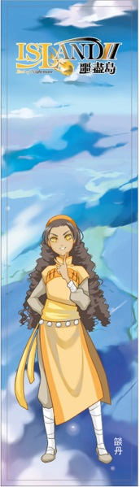
燄丹
麟犼幼獸。修練爆訣、炎靈。三小中年紀最大。
原本把台灣當成是家，其後遇到洛年時，因自身天成之氣無效、又能隱約感應到道息，所以覺得洛年很奇怪，決定跟著他走，繼而認識懷真、山芷、羽霽。
道號是由懷真所取。因身上的顏色比其他麟犼深色，故取為丹。
與懷真等人一起探險，與山芷、羽霽一起修練。化為人形後是十二、三歲的夏威夷混血少女。
母親名燄潮，奶奶名燄裂、阿姨名燄雲。
其後從祖姥燄華手上得到祖先遺留下來的寬劍。
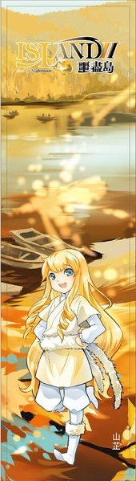
山芷
窮奇幼獸（約一百多歲）。懷真稱之小窮奇。炁修柔凝。
與羽霽是由小玩到大的玩伴。天性喜歡「不可理喻之人」，所以經常黏著洛年。
道號是由懷真所取。因身上帶有紫紋，故取為芷。
化為人形後是八、九歲的金髮藍眼白人女孩。
母親名山馨，也頗喜歡洛年的味道。祖母名山蔭，曾祖母名山琅。
祖母抵達人間時給了一把釘耙狀的精器武器。
山蔭雖也對洛年的氣味有興趣，但由於認為洛年會令窮奇一族失控而下令禁止來往。
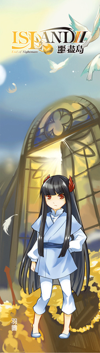
羽霽
畢方幼獸（約一百歲多）。懷真稱之小畢方。懂得用炎靈。三小中年紀最小。個性有點愛遷怒。
與山芷是由小玩到大的玩伴。不喜歡洛年，因為覺得洛年把玩伴搶走。
道號是由懷真所取。因身上的羽毛像睛朗的天空一樣，故取為霽。
化為人形後是八、九歲的黑髮東方女孩。
母親名羽麗，祖母羽青在小時候曾不小心燒了雲陽，導致兩族差點交惡，曾祖母名羽彩，一族與懷真頗有交情。
祖母抵達人間時給了兩枝柱狀的精器武器。
后土
輕疾的本體。因洛年擁有闇靈的關係而現身，並提供免費的多功能輕疾。能回答常識性問題，也精通大地上的事（如文化、語言），但非常識性就不能回答，會以「此為非法問題」回覆；洛年試過一次有沒有另一種回答時，說出「這是禁止事項（出處：涼宮春日系列）」。
農摩
牛首族人。洛年擔任牛首族「神巫」時的助手。
姜普
牛首族的皇子，因洛年幫忙牛首族而贈牛精旗。
阿白（落葉之風）
狼妖王眾多妻子之一，仙狐一族。因為對狼妖王是因為喜慾之氣才喜歡她而感到害怕。趁白宗等人與狼妖族打鬥逃出族群，後以人形姿態（十八、九歲的南洋女子）被一心等人救助，但因此牽連一心等人。
最後與狼妖王談妥，得知其心意，與狼妖王私奔。
狼妖王（踏沙之足）
阿白的夫君，白狼一族的王。因阿白的關係而追著一心等人。即使得知阿白是仙狐一族也不願意分開，甚至捨棄王的身份與阿白私奔。
敖旅
虯龍皇族。人形姿態是三十歲左右的東方男性，龍形是長達六、七尺長的青色四爪龍。
有兩名弟弟敖彥、敖盛。敖彥人形是皮膚稍白的二十七、八歲的青年。敖盛是皮膚較黑的二十出頭的年輕人。
在第十三集敖旅跟兩個弟弟為建立龍族威信而欲擒殺洛年，最後被洛年取巧擊敗。
翔彩
寓鼠族的妖仙，起初因雙生山魈一事而求助於白宗眾人。在得到洛年的幫忙下解決一族的危機，為報恩而護送白宗眾人。
其後為方便溝通，取得小純的精元化人。並指點白宗引仙者妖炁修練法以及教導小純飛行空戰的技巧。
其他人物
沈商山
沈洛年的叔叔，電影導演。
艾露
酖族的女巫。最年輕的女巫，通稱小露，登場時才剛成為女巫不久。
道息爆發後，全靈仙化跟隨著麒麟一起用光靈幫忙解決核能污染。
毛逸
酖族的主巫。眾多女巫中最年長。
與小露一樣接受全靈仙化，協助麒麟。
文森特
月影團的成員，身穿黑袍的老者，成員中最為年長。至少懂得八種語言。魔法陣帶藍色光暈。
瓊
月影團的成員，微微駝背，戴著眼鏡的老婦。魔法陣帶艷紅光暈。
沃克
月影團的成員，身材削瘦的中年人。魔法陣帶橙色偏黃光暈。
基蒂
月影團的成員，二十歲出頭的女性。魔法陣帶紫色偏藍光暈。後得白宗幫忙得以煉鱗引仙。
杜勒斯
月影團的成員，十歲出頭的男孩。北平人，剛學習魔法不久。魔法陣帶白色光暈。對狄純有好感。
- 第二部
-主要人物 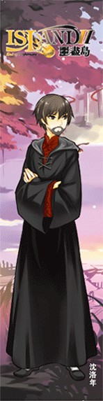
沈洛年（沈凡）
裝備：天仙飛翼、火浣衣、血飲袍、吉光皮套；影蠱凱布利→龍涎珠；飛梭燈；魔法小抄;金犀匕、闇神之鏡(在最終卷以金犀匕及闇神之鏡出戰) 狀況：鳳凰換靈，修練光靈，魔法:三次契約(暗紅色，近似血)，根源魔法:占卜(因想尋得某人或某物而產生，洛年的情況為懷真)，以及自己研究出的瞬移魔法（個人、瞬間）。雙本源炁訣（三
輕七柔)，十八撩亂(雙匕招式)。吞噬道息，養炁道息。
因鳳凰換靈而得到觀察本質的能力，也因此對他而言人與妖族的差異不大。
在沉睡百年後，理解精靈提示而於噩盡曆一百零二年十一月八日甦醒，外表依然是十七、八歲(精神倒是沉穩些許)。由圓足教院長艾露救起（身上有蝶兒）。
沉睡期間精神被引至仙界，由精靈「告訴」他繼續活下去的方法。
在沉睡期間其思念體與精靈的長期接觸和交流使雙方的默契和關係非常強，不論是甚麼魔法，只要念完就能使用，即使發音極其不正也沒問題。
本人魔力(精智力)也比普通人強上不少。不過因為嫌麻煩所以沒有背下多少咒語，而且溝通全靠精靈的理解，念咒速度快不起來，因此一般咒語在戰鬥中不常使用。
醒來時因道息幾乎全失，僅剩的少量道息給予凱布利便能引炁修煉，故能修練炁息。
因洛年已失去闇靈之力，后土便逕自取消跟洛年的破例服務，需用一般的方法召喚輕疾(後與后土條件交換，獲得僅限醫療方面的多功能版輕疾)。
為了前往龍宮尋找懷真而當上光靈師以加入特別隊，與光靈締約而當上光靈師使身上炁息全無（魔法島之戰中麟孔燄華提供精血上承光靈，提早符合契約值）。
為了不被白宗人士認出而留鬍子，並在艾露提議下化名沈凡。後來被誤會為沈洛年的兒子，知道他就是洛年本人的人並不多(十聖中也只有狄純，杜勒斯及葉瑋珊(知情不說破)三人，當中杜勒斯已死)。後因與懷真復合而向剩下的九聖表明正身。
沈洛年當上光靈師後以光靈之術加上血飲袍的獨特優勢，在戰爭中能夠迅速處置傷口，在多次戰役中救回大量傷患，被譽為「神醫沈凡」，後與犬戎族戰鬥時，以改變質量的能力在洞道中橫掃犬戎族，繼而獲得「怪力神醫」的稱號。
在百年前，當年沈洛年打敗虯龍、擊退來犯的犬戎、鑿齒、刑天等事被紀錄在歷史課本，甚至還有小說「闇神傳」，可惜數十年前絕版，僅狄純手上還有一本，並被人族傳為「初代屍靈之王」、「闇神沈洛年」，另有「縛妖神仙」之名。
重獲炁息後，經敖歡教導修得虯龍的修練秘訣（雙本源炁訣），修練三輕七柔（占卜得出）。
由於鳳體的兼容特性，加上與精靈溝通程度異常的高，而可以在修習炁息時依然能締結三次契約。
現時使用的武術為賴一心專為他設計的「十八撩亂」。
雖然有著相當好的女人緣，但因鳳凰的觀心異能，真正稱得上戀愛感覺的只有懷真以及年輕時的葉瑋珊和艾露，本人則只對前兩人有過感覺。最終和懷真確立了夫妻關係，雖未點明但和狄韻關係曖昧。
當初沈洛年體內只有炁息的時候已經能與妖仙搏鬥，後期加上化散炁息的道息，以占卜魔法作弊般地掌握住運用十八撩亂的招式，高階天仙以下，已無對手。（在最終卷秒殺十三隻犬戎族高等妖仙）
在最終卷以金犀匕出鞘大戰闇靈附身的屍靈王，並將其擊敗。
懷真
修練多年的九尾天狐，百年前與洛年相遇蛙仙島，為拿回洛年取走的渾沌原息，遂與洛年立下誓約。 百年前最後因洛年要擺脫闇靈能力，打破懷真閉關，犧牲自己拯救人類並與懷真解除誓約，懷真於解除誓約後誤以為洛年已死故封閉修練之地。 在第九卷與沈洛年重逢，並授予沈洛年仙狐族讓炁息與本命結合的修練方式。 變得特別會吃醋。第十一卷時離開閉關(為煉化百年前從洛年身上吸走的渾沌原息)。
圓足教
艾露 百年後的現在成為光靈師。外表只有三十餘歲。 於六十年年前創立圓足教，並建設圓足醫院，救了不少人，十聖皆很尊重她。 艾露具備幫人半靈仙化的能力。 與縛妖派的兩位二代祖師有淵源，於百年前以姐妹相稱。
王橘
圓足教掌教。六十餘歲的白袍婦人。已跟隨艾露超過六十年。
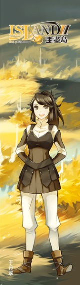
于丹翠
把大鬈髮束成馬尾，身穿鵝黃色素服的女子。三十歲，對樂和之氣沒免疫力。相當畏懼妖怪及屍靈，但對遇上可愛的事物時很容易思慮不清。 圓足醫院實習醫生，已具有足夠能力考取醫生執照，但因一直想當光靈師助手故遲遲未去考取，後接受艾露提議當光靈師沈凡（沈洛年）助手。
於前住魔法島兼觀察祖返症患者一行時，再度成為沈凡的助手，並接受短期引仙（煉鱗，武器為雙鐗）獲得自保能力。
之後與精靈做二階契約習得根源魔法（特殊的空間傳送）。
十聖
洛年於噩盡曆一百零二年時甦醒，聽到艾露對其解釋十聖在二十一年前（噩盡曆八十一年）鬧翻時，鬧翻原因十聖並未對外說明，故原因目前除十聖之外無人知曉，武尊首先離去，不知去向。燕仙與大魔導師避入宇定高原。電劍、鷹王、冰之女王以及護國雙刀的瑪蓮越過藍瑤河，尋地隱居。擎天塔便只剩炎之女帝、無敵將軍以及護國雙刀的吳配睿。十九年前（噩盡曆八十三年）應龍赤濤來襲，與人類兩方最終開打，女帝、無敵將軍以及護國雙刀的吳配睿三人無法抗衡，赤濤占據擎天塔，另外七聖聽聞消息先後趕來，最終合力趕走赤濤，十聖重歸於好隱居於擎天塔不問世事，女帝葉瑋珊自此開始考量遴選接班人。 誤認沈凡是沈洛年的兒子，當中只有連同死去的杜勒斯、葉瑋珊及狄純三人知道沈凡就是沈洛年本人。於第十集中因懷真向葉瑋珊等人透露古仙仙府的位置，繼而得知沈洛年化名沈凡一事。
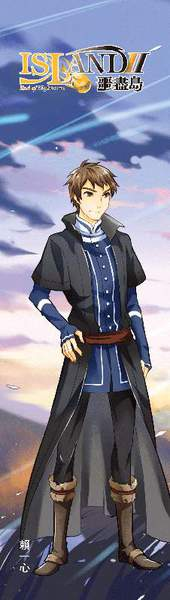
武尊 – 賴一心
裝備：黑木長矛（精體武器）
狀況：內聚型，專修柔訣。無引仙
退隱前負責傳授引仙部對武技四十餘年，收徒無數，創出無數功法與招式，故獲得武尊稱號。
與葉瑋珊兩人結褵以來是人民眼中模範夫妻，生下六名兒女。 十聖當年反目的導火線為被吳配睿告知百年前瑋珊與洛年於船頭擁吻一事(實情為洛年強吻瑋珊)，繼而心生芥蒂，常年出城不歸。之後被張志文設局迷姦的事又被瑪蓮鬧大，而日後又因張志文補救失當，使得一心與瑋珊完全陌路，與瑋珊冷戰至今。實情則為賴一心本醉心武藝而未有好好地經營和瑋珊的感情，瑋珊也就借了這機會和他分開。
外表年齡近三十歲左右。
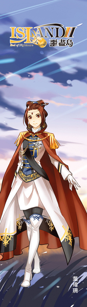
歲安軍團總司令（又稱炎之女帝、女帝）– 葉瑋珊
狀況：發散型，專修爆訣，修練炎靈。無引仙
因十聖百年前即呼籲修築歲安城，但因人民民心問題民選城主遲遲未修築，十聖等人隨後於噩盡曆三十六年七月發動政變，由女帝葉瑋珊統帥歲安軍團軍事政變，推翻民選城長統領人類，先花七年修築歲安城後花七年修築九迴山地下城，趕在虯龍保護人類五十年期限到期前即時修好抵禦妖族侵犯。
被沈洛年影響頗深。六十多年前葉瑋珊決定政變時，曾對眾人說過「別忘了洛年那『自反而縮，雖千萬人吾往矣』的氣魄。」（【注】：語出《孟子·公孫醜》，意爲：自我反省，只要合乎義理，縱然面對千萬人，也一樣勇往直前。）
本人一直自稱歲安軍事團團長，但人民私下稱呼其炎之女帝。
與賴一心兩人結褵以來是人民眼中模範夫妻，生下六名兒女，再下面還有十五個孫兒女。
外表年齡三十歲左右。於第七集認出洛年，但彼此都沒有說穿(因為即使相認了也無話可說)，現在對洛年的感情極為複雜。
於第11集末依照狄韻的猜測，早與武尊感情淡泊，另有情夫。
冰之女王（又稱冰后） – 奇雅
裝備：輕絨鏈
狀況：發散型，專修柔訣，修練凍靈。無引仙
女帝葉瑋珊政變時，領軍的四將軍之一。
外表年齡三十歲左右。髮型由短髮改為長髮盤捲成形，垂在後腦。輕疾名稱是『凍靈師奇雅』
嫁與電劍侯添良，但現在關係貌似已轉冷。
當年之所以會出城隱居，是因為她的能力可與炎之女帝葉瑋珊匹敵，導致那些失意的政客與投機之徒紛紛乘機游說。雖然本人並沒有意願，可是奇雅仍為了避嫌而出城隱居。而電劍侯添良、血煞刀
瑪蓮、鷹王張志文隨即跟出。
鷹王 – 張志文
女帝葉瑋珊政變時，領軍的四將軍之一。
裝備：裝在足部的尖刺
狀況：千羽引仙，專修輕訣。
百年後，沈洛年再次見到他時，因不明原因，臉上戴著面具。 娶血煞刀瑪蓮為妻。可是在赤濤一戰後，與瑪蓮因故鬧翻，雖然為了十聖的形象而對外仍稱是夫妻，其實已形同陌路。其後更有意追求燕仙狄純，可是在眾人皆以為沈凡與狄韻是闇神沈洛年與狄純的兒女後，放棄追求。
個性變得非常好色，似乎時常出沒於山口鎮的酒氣大街。他因沈洛年而認為「絕招得先藏著，緊急的時候用出來才帥。」
因不滿瑪蓮時常把賴一心對妻子的忠貞與之比較，所以設局派人迷姦賴一心，以圖破壞賴一心於瑪蓮心目中的形象。為賴一心養情婦一事的主謀。
電劍 – 侯添良
裝備：窄刺劍（精體武器）
狀況：揚馳引仙，專修輕訣。
外表年齡五十歲左右臉上戴著面具。
性格和以住不同，變得謙沖溫和。因他認為沈洛年是『無欲則剛』的典範，「因爲他什麽都不在乎，自然不受任何威脅。」
初次重遇洛年時不知其身份，誤以為是縛妖派之人（其實就洛年的身分而言也算不上誤認）。
娶冰后奇雅為妻，但現在關係貌似已轉冷。
無敵將軍 – 黃宗儒
女帝葉瑋珊政變時，領軍的四將軍之一，當時因為只有黃宗儒沒有稱號，所以當初職稱無敵將軍後來變成其名號。
裝備：雙棍（精體武器）
狀況：煉鱗引仙，專修凝訣。
外表年齡五十歲左右，嘴巴旁留著一圈鬍鬚。
輔佐葉瑋珊數十年，協助政務問題。
與吳配睿的關係為十聖中四對夫婦唯一沒帶半點戀愛成分的一對(第一部中提到黃宗儒暗戀葉瑋珊，而吳配睿因家庭成長背景拒絕愛上任何人)。卻是十聖裡最圓滿的，據吳配睿稱是因為互相體諒的心。
由於即便與吳配睿結婚後，疑似仍然放不下對葉瑋珊的感情。再加上是葉偉珊的左右手，於公於私都比較偏向葉偉珊，導致引起了吳配睿一絲的妒意，也是日後十聖鬧翻的主因之一。
燕仙 – 狄純
裝備：雙匕首
狀況：千羽引仙，專修輕訣。
十聖裡戰鬥力最弱的。
初次重遇洛年時一眼就認出是洛年。對女兒小韻過早變體一事十分在意。
當年因感覺十聖之間的氣氛改變，而與大魔導師杜勒斯一同歸隱宇定高原。其後於此生下狄韻，當回歸歲安城時因不肯說出狄韻生父是誰而遭眾人懷疑是武尊賴一心的私生女，雙方皆否定，後來狄韻和沈凡(即沈洛年)被誤以為洛年與她的孩子，但狄韻生父至今身份不明，在第八集第四章占卜得知為狄韻所不認識的人，在第十集第二章由懷真問出來對方名叫王方，其他資訊狄純都不肯說。王方疑似妖族天仙，懷真認為那只是化名。在十一集經沈洛年告知王方就是虯龍族的天仙敖歡。
雖然在第一部中已被洛年多次警告，但本人也是喜歡一心的。
護國雙刀（血煞刀） –瑪蓮（此稱號為十聖中唯一的雙人一同共享稱號）
與小睿兩人皆不喜歡共享稱號，因此瑪蓮自己取名為血煞刀。
裝備：血煞刀（精體武器）
狀況：煉鱗引仙，專修爆訣。妖炁重點於右手。
外表四十餘歲。
後嫁鷹王張志文。可是在赤濤一戰後，與張志文因故鬧翻，雖然為了十聖的形象而對外仍稱是夫妻，其實已形同陌路。
護國雙刀（至尊刀） –吳配睿
與瑪蓮兩人皆不喜歡共享稱號，因此吳配睿自己取名為至尊刀，似乎是因為黃宗儒在線上遊戲裡的名字「至尊無敵」而取。
裝備：至尊刀（精體武器）
狀況：獵行引仙，專修爆訣。
外表四十餘歲。髮型由馬尾改為短髮。
輔佐葉瑋珊數十年，協助人事問題。
嫁給無敵將軍黃宗儒。據本人所稱，他與黃宗儒是唯一之間沒有愛情而結婚的(第一部中提到黃宗儒暗戀葉瑋珊，而吳配睿因家庭成長背景拒絕愛上任何人)，可是因互相體諒的心而使的兩人的婚姻是十聖裡最圓滿的。
個性也有極大的變化。因負責處理的是人事問題，所以個性變得較理性。也有一部分原因與沈洛年有關，因她認為「有實力的人，大可以直待人，不用虛僞客套，別人一樣會聽話。」 由於黃宗儒不管於公於私都較為偏向葉偉珊，引起她一絲的妒意。便在某一日有意無意的向賴一心吐露出百年前瑋珊與洛年於船頭擁吻一事(實情為洛年強吻瑋珊)，導致引起接下來的一連串事件。吳
配睿沒想到因自己的一絲妒意會引起這麼大的事，在日後相當懊悔。
大魔導師 –杜勒斯
女帝葉瑋珊政變時，領軍的四將軍之一。
外表已是個老人了。愛馬名為飛絮，由狄純所取。
認出沈洛年（應該是出於血紅色的咒印光華），並誤認他是狄韻之父，沈洛年才將死睡百年說出。
在前往魔法島求援任務中，引開赤濤，精力大損，後又與狼人族長對戰，精智力耗損太遽，不幸隕歿。
特別隊
起初為「女帝試練」設立的編制，共三組，一組最多五十人。
其後放犬戎攻入噩盡島時，女帝下令三人將隊伍擴張為一連四百人，三連合為一營。直屬軍團司令。其後共有五千人。
狄韻連隊（特三營）
狄韻
裝備：白色的小金屬魔杖；影蠱小螳（雌性螳螂）
狀況：發散型，專修輕訣。修練凍靈，魔法中專練的是火系。
「燕仙」狄純於十聖鬧翻兩年間所生女兒，因「燕仙」狄純與「大魔導師」杜勒斯兩人並未結縭，而兩人也不願說明狄韻究竟是狄純跟誰的女兒，其後又在沈洛年的占卜之下得知生父並非十聖其中之人，故父不詳。除研習道術外還向「大魔導師」杜勒斯學習魔法，為少見的魔道雙修。女帝候選人之一。
外表只有十三、四歲，實際上已二十歲。
擁有一張甜美可人的笑臉，但因其表面功夫心中毫無笑意的假笑與氣息令洛年稍為反感。因洛年不慎看到狄韻裸體冒犯到狄韻，導致狄韻對洛年帶有怒意與殺意，一度衝動想殺死洛年。在一次被說不要假笑時更令其震怒，並以冰矢攻擊，但不敵洛年的時間之力而失敗，慢慢二人開始打開天窗說真話（但洛年依然有隱瞞百年前的事），而洛年不知不覺成為令狄韻以真正性格對談的人。
在狄純與洛年相認時在場，雖不知其身份為闇神，但因為狄純的說明不明不白，導致狄韻懷疑其為自已的親生父親。
身體因過早變體而無法發育，其後在山口鎮的稚喜堂植下甦䔄令發育重啟。
於第二部第七集猜出沈洛年的闇神身分，並獲得沈洛年口頭的既不完全承認、也不否認。
後得知其父為虯龍敖歡，故事後半段似乎對洛年有特別的情感。
安荑
武器為雙鐗，歲安軍校撼山專科畢業。
狄韻副手，特別隊的副連。於連隊變成特三營時成為四名隨官之一。
疑似具有白人血統，有著一頭黑髮，帶有禮貌性微笑的冰山美女。
小時與雪莉一同被大魔導師杜勒斯收養，陪伴狄韻在擎天塔中長大修練，與狄韻、雪莉情同姊妹，並同住在同一房間。
於犬戎族進攻中受傷得到沈洛年醫療而心懷感激，但因為誤會沈洛年與雪莉發生關係而對沈洛年不滿，後來誤會解釋後對沈洛年稍有好感。
雪莉
武器為雙鐗，歲安軍校撼山專科畢業。
狄韻特別隊的成員，於犬戎戰爭時為連隊中五名隊長之一。於連隊變成特三營時成為四名隨官之一。
白種人血統，有著一頭紅髮，性格豪放不羈，內心與行為如一令沈洛年欣賞，有意做些行為刺激狄韻與安荑，令沈洛年覺得她其實很聰明。
在沈洛年騎馬時，查覺沈洛年異，而對沈洛年感到好奇，後來與沈洛年聊天下覺得沈洛年可以交朋友，同時感謝沈洛年救治安荑，對沈洛年深有好感，甚至曾對洛年稍為表態，但洛年認為她內心還有更深的一面未對人展現。
從安荑與沈洛年談話中，了解雪莉因小時心靈創傷導致長大後性格一部分獨特。
盧智偉 於歲安軍校撼山專科畢業的軍官。稍矮的青年，經常掛著和氣的笑容。 狄韻特別隊的成員，於犬戎戰爭時升職為小隊長，統領約十五人的小隊，隸屬於紅坤隊裡。
紅坤 於歲安軍校撼山專科畢業的軍官。眼睛很大，古銅色皮膚。 狄韻特別隊的成員，於犬戎戰爭時的連隊中五名隊長之一。 在學時曾向安荑挑戰（因雪莉說安荑只與能打贏安荑的人交住），結果被揍。
蘇直
於歲安軍校撼山專科畢業的軍官。狄韻特別隊的成員。
羅鏡
縛妖派羅宗之人，身穿一身黑衣與蒙面，只露出雙眼，在狄韻小隊裡，後縛了一隻名為猙的妖。其後以猙為分身隨著狄韻小隊行動。於連隊變成特三營時成為四名隨官之一。
李允生 在連隊變成特三營時加入的營副。三十歲左右的青年，為魔法師，專練石系魔法。
特一營
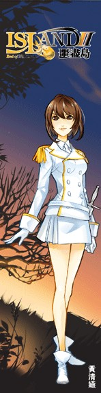
黃清嬿
裝備：銀色連鞘細長匕首
狀況：發散型。修練炎靈，七分爆三分輕訣。
「武尊」賴一心與「炎之女帝」葉瑋珊外孫女，「無敵將軍」黃宗儒與「護國雙刀」的吳配睿孫女，精研炎術。現年二十八歲，為五官清麗的美人，但和氣中隱透著精明，充滿著堅強與知性之美。女帝候選人之一。
為了把擁有強大戰力的沈凡(本人不知道對方即是沈洛年)留在歲安城來保護人類，嘗試和洛年交往，但實際上對他沒有戀愛的感覺。但這段關係很快就被洛年終結，原因是洛年指出清嬿沒有嘗試付出感情(事實上因為是剛和洛年重逄的懷真表示略有醋意，雖然洛年本就無意長期交往)。
姜希鳳
黃清嬿的隨官，為揚武兵。二十餘歲，身材修長，膚色黑褐的女子。
余憲馨
黃清嬿的隨官，為撼山兵。身材較矮，臉圓圖，看來有點憨厚的女子。
洪治平
特一營的營副。專修柔訣，武器為長槍，為易質轉仙者。患有「返祖症」。
性格穩重的男子。對清嬿有仰慕之心。
返祖妖化後身上透出長毛。
於第二部第七集由畢方協助完全返祖，為犬戎血脈，完全返祖後因為不能接受自己的血脈，而往東方跑走。
楊呈婷
黃清嬿的隨官。
特二營
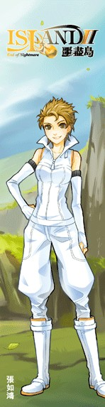
張如鴻
裝備：長槍
狀況：發散型。修練凍靈，專修凝訣，善用長槍戰鬥技法。
「鷹王」張志文與「護國雙刀」的瑪蓮孫女，「電劍」侯添良與「冰之女王」奇雅外孫女，除研習凍術之外也拜入「武尊」賴一心門下鑽研戰鬥技法。個性帥氣又爽朗，性格愛胡鬧但相當精明。女帝候選人之一，但實際上對司令之位興趣不大。
和蔣傑為戀人關係，但遭到外祖母瑪蓮的強烈反對(原因是她極不喜歡娘娘腔)。
蔣杰
特二營的營副。專修輕訣，武器為劍，為易質轉仙者。患有「返祖症」。
在前往魔法島求援任務中，遭狼人高手重傷，提早妖化以治傷。
外貌及言行略為女性化的男子，常遭他人投以異樣目光。和如鴻為戀人關係。
返祖妖化後炁息內外不分，可持續飛行。
於第二部第七集由畢方協助完全返祖，為畢方羽銀的後代。
黃詩舜
張如鴻的隨官，武器為雙鐗，輕柔雙修。身材稍高的女子。
在前往魔法島求援任務中，遭狼人高手擊斃。
高可茜
張如鴻的隨官，武器為雙鐗，輕柔雙修。短髮女子。
在前往魔法島求援任務中，遭狼人高手擊斃。
妖獸
凱布利
沈洛年的影蠱，百年前不具備靈智與形體。品種為雲南蜣螂(糞金龜)。
因在沈洛年沉睡期間吸取其混沌原息（道息）修練百年，百年後具備形體與些微靈智。
在第二部第八集時敖容贈與沈洛年龍珠而沈洛年將凱布利與龍珠融合(因敖容的半逼迫性)，變成一隻有如手掌大小的七色蜣螂，進化後喜歡伏在洛年的頭上。
靈性比以往高，具有與龍珠相同的排斥炁息之能力，亦不畏懼火炎或冰凍。
能收斂道息並潛伏到敵人身邊。亦成為沈洛年空間移動魔法的標的物，讓沈洛年能隨時瞬間移動到牠身邊，等於只要凱布利貼在敵人身邊，沈洛年就能隨時近身而戰。
其後狄韻的影蠱小螳被放到其身上時，因同類的出現而高興。第二部十一集，在變成透明時因不明原因吞噬(或融合)了小螳。
麒麟（塔雅‧藍多神）
幫忙艾露探查沈洛年身體情況，並告訴艾露沈洛年醒後修煉之法。
敖旅
虯龍皇族。人形姿態是三十歲左右的東方男性，龍形是長達六、七尺長的青色四爪龍。
沈洛年甦醒後於九迴山碰到敖旅，敖旅希望能夠再次切磋以報當年被打敗的仇，後因沈洛年道息全無而作罷。
現在因為屍靈出現，而在人類九迴山之地駐守。
有兩弟—敖彥、敖盛。
翔彩
寓鼠族的妖仙，現因為屍靈出現，而在人類九迴山之地駐守。
赤濤
應龍妖仙，善用赤靈。找上歲安城命令人類交上大量財寶，但人類生活不像道息爆發之前優渥，而無財寶奉獻，後被十聖合力擊退。但仍不時跑到歲安城隨機擄人勒索，命受害者家人湊足財寶贖人。因歲安城地上鋪上息壤磚，赤濤不願接近地面亦不願與十聖正面對決，故都在天空攻擊擄人，若抓不到人即破壞民房。歲安城在赤濤騷擾時會發起「赤濤警報」。 在第二季第三集被一千多名魔法師施展「初級緩速咒」而被加上百噸重量而被制服，現與葉瑋珊立咒誓，保證不攻擊在擎天塔百里以內的人類。 之所以找上歲安城，因洛年在百年前「光顧」過赤濤的寶庫。 而赤濤發現葉瑋珊擁有的金烏珠（此為洛年贈送）和寶庫附近尋獲的人類衣服以及與洛年對陣時發現的火浣袍而更是一口咬定人類都是騙子，在被洛年一番追打後終於同意成為人族的守護神。 人形時為的紅膚大漢。
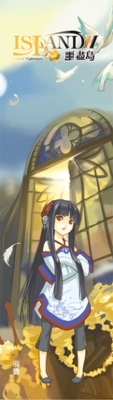
羽霽
裝備：兩根短刺
狀況：靈妖，畢方一族。爆輕雙修，炎靈。
畢方幼獸，外表約十歲出頭的黑髮女童。於山口鎮擔任保鑣(將來鬧事的趕走)。對沈洛年有些許敵意。
母親羽麗，祖母羽青，曾祖母羽彩，玄祖母羽銀。
山芷
裝備：五齒釘鈀
狀況：靈妖，窮奇一族。柔凝雙修。
窮奇幼獸，外表約十歲出頭的金髮女童。於山口鎮擔任保鑣(將來鬧事的趕走)。雖化人已有百年，但說話依然帶著童音。喜歡纏著沈洛年。
母親山馨，祖母山蔭，曾祖母山琅，玄祖母山果。
燄丹
裝備：虯龍寬劍（從祖佬手上得到）
狀況：靈妖，麟犼一族。爆訣，炎靈。
麟犼幼獸。外表約十五、六歲的南洋少女。小麟犼四姊妹中的老大。
燄華
狀況：天仙（但未登記仙籍），麟犼一族。爆訣，炎靈。
麟犼妖獸，為族中首代。皮膚紅中帶碧，鬃毛潔白色。脾氣惡劣，愛打架，該族的名聲皆是焰華搞出來的，在該族繁衍至第三代時才開始畫下地盤和定下規矩，自我收歛。
在應龍赤濤現身於地盤邊境時出現，後誤以為赤濤進入地盤而出手，但卻因妖仙燄烈與燄碎勸說因規矩不能動手，似乎不太記得自已所定下的規矩。因赤濤挑釁說出「如保定人類就不放過你們」而保定聲稱「拜訪」的杜勒斯等人。
之後看在三小的份上幫助洛年守住魔法島。
母親為麒麟素紋，父親為虯龍敖容。
於第七卷給予沈洛年麒麟胎血使其能提前引炁。
與懷真關係不好。第八集第二章敖容說明原因：敖容和素紋約定過，這孩子由他養大。一開始雖然燄華脾氣有點急躁，大家還是挺疼他，但從王母帶回懷真之後，焰華發現自己沒有母親，和別人不同，整天亂發脾氣，而懷真當時已經是個漂亮女孩了，嘴巴又甜，兩邊這一對比，就沒有人願意理焰華了。
敖歡
教沈洛年三輕七柔的修練秘訣，虯龍天仙。個性跟賴一心一樣爽朗正直，守不住別人秘密。後來在龍宮內宮時幫助洛年尋找敖容傳話給龍王母。
為狄韻的真實生父，狄純之夫。當初在定宇高原上遇見化名為沈燕的狄純，他化名為王方並纏了狄純三個月才得以與之交談，追了一年才成功取其為妻子。不過就在狄韻剛誕生之時就發生赤濤強攻擎天塔之事，敖歡因當年龍王母應允沈洛年不干涉人族事宜而無法答應狄純的請求一起去幫忙，導致狄純負氣獨自帶著狄韻回歲安城。雖然敖歡在暗處看到十聖成功擊退赤濤，不過就在這時卻因龍宮要封宮而被招回，日後敖歡再次溜出龍宮想再用輕疾連繫沈燕時，卻因狄純已將輕疾名改回而無法連繫，自此失聯。
因犯錯而受囚於內宮中。在從洛年得到燄華的口訊後，把其中一粒龍涎珠送給焰華，以及把另一粒送給洛年，在得知洛年的持有影蠱時，半硬性地把凱布利塞入龍涎珠，希望立刻能看到實驗結果。
懷玉
仙狐妖仙，外表二十餘歲的東方女性。稚嬉堂的負責人，另在鎮上設有初露堂和摘艷堂。於第八卷答應沈洛年轉告懷真百年前洛年並沒有死。是杜勒斯的仙狐愛侶。
龍王母
為四海之尊，虯龍族的王。第一部答應洛年保護人類五十年，第二部中因為千年一次的生育時期所以在二十年前關閉龍宮。
原型為百公尺長的龍。
蛟龍王公
蛟龍一族之首。姿態為頂著金麟龍頭的五層樓高人型。對自家的孩子十份嚴格。
黑石
應龍天仙，善用雷靈。一族中最有錢的龍，被其他龍（如赤濤）所尊敬。在十一集被主角騙要保護人族五百年，而五百年過了也一樣不能對人族出手。因為不小心在一次吵架中失手打傷妻子銀嵐而躲著她的魔掌。聽說這對夫妻倆的事件在當年是傳遍天下（連一直在龍宮內功修行的敖歡都知道）。
赤雪
剛修練成天仙的應龍，赤濤的姐姐，善用凍靈。當初因為聽到朋友說弟弟被沈洛年打傷而跑來教訓赤濤。但在跟沈洛年對打的時候，發現他不弱又使用魔法之後就拜託洛年幫忙她與精靈契約，並也告訴洛年關於精靈與心念魔法的事。定締後魔法光色是銀紅。
銀嵐
應龍天仙，黑石的妻子。因為當初家中擺設不合失手打壞黑石的幾個寶物，卻不小心被黑石打傷之後銀嵐就立誓以後抓到黑石後就誓要把他的所有寶物都打壞。
習慣於身上抹上丹木膏，每當黑石離遠聞到這味就立刻聞風而逃。
人形為三十歲出頭，身穿紫色服飾的白人女子。
魔法島
基蒂
月影團團長，魔法島的統治者。在離開歲安城時與杜勒斯發生誤會，後在杜勒斯探訪魔法島時皆不與之會見，導致誤會一直未能解開。於第五集結尾傳出被刺身亡的消息。(被黑石化為人型所殺)
昆廷
月影團副團長。七十餘歲的黃鬚白人。
亨利
昆廷之子，母親名果英。約三十歲的金髮白人，高俊挺拔的俊男。根源魔法是食物魔法。對狄韻頗有好感。
凱絲
四十出頭，樣貌平凡的女子。魔法光色為黃光。根源魔法是束縛魔法。
戴維
褐髮的結實男子。根源魔法是空間移動魔法。
美寧
燕島上的四名巫師長者之一。頭髮為銀白色，無鬚，臉無笑容的老者。魔法光色為白色。
其他人物
李翰
原被認為第二代屍靈之王，於噩盡曆五十多年妖怪攻打人類歲安城，人類情況危及時對外宣稱受到第一代闇靈之王囑託，自願成為屍靈之王並把三百名親信兵變為屍靈後，成功打敗妖族後擁有數十萬大軍，並在強大妖仙趕到之前率領屍靈大軍退避九迴地下城。
第十一集被眾天仙所殺，促成屍靈王大成（闇靈附體），使沈洛年發現劉巧雯才是真正的屍靈之王，李翰為巧雯首次也是最後一次所製作的殭屍，而李翰本人得到的闇靈之力比身為王的巧雯更多。
梁乃均
憾山軍校總競技大賽冠軍，因此跟當時是校花的安荑約會了四次因而愛上安荑。本身將洛年當成情敵，說話非常咬文嚼字，安荑說是因為他是「語學家」的關係。
軍階為統校，常用武器為長槍，劍與雙鐗也皆會運用。「返祖症」患者之一，為軍中此症年紀最大者。
於第二部第七集由畢方協助完全返祖，為牛首妖血脈，具奮勇之氣。
吳苡
於山口鎮的「稚嬉堂」(仙狐族開設)工作的三十餘歲圓臉女子，帶有收斂著的妖炁，推測是微靈仙化者。
雖是在稚嬉堂工作，但對被種入甦瑤之稚女的未來很重視。
劉巧雯
李翰的妻子。本作中真正的死靈之王，多年前碰巧撿到當年洛年丟到湖裡的闇靈法器，在幾十年後變成死靈之王（因不知使用方法導致幾十年才成功），但因為無法像洛年一樣維持原樣後來在李翰的安排下裝死躲了起來。
在第十一集中李翰故意被眾天仙所殺，讓劉巧雯被闇靈附體，依照闇靈的說法劉巧雯變成死靈之王時只有製造骨靈，後來不知為什麼將李翰變成殭屍。 洛年並用空間移動能力（心念魔法）與之纏鬥，最終成功擊殺屍靈王，是后土所見以來第一次擊殺受到闇靈附體屍靈。